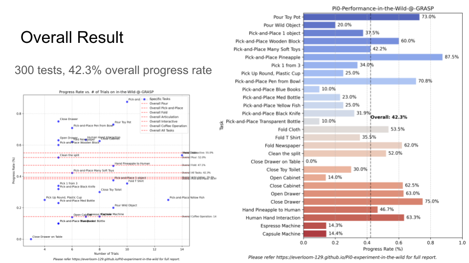
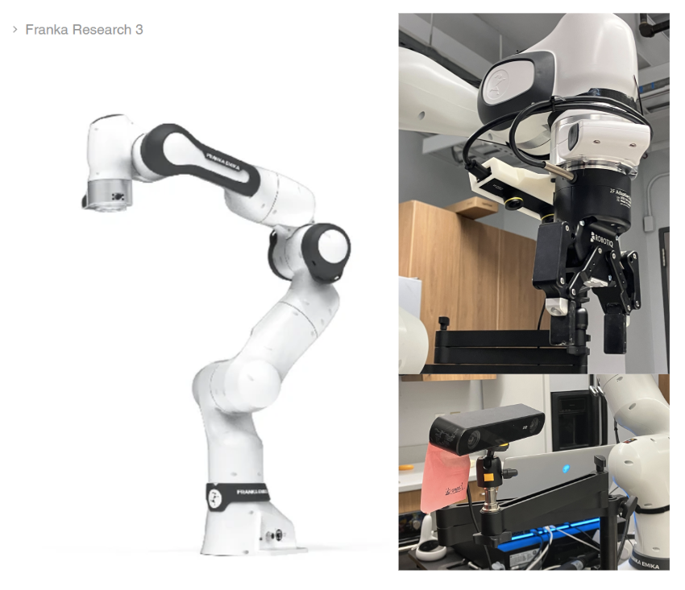
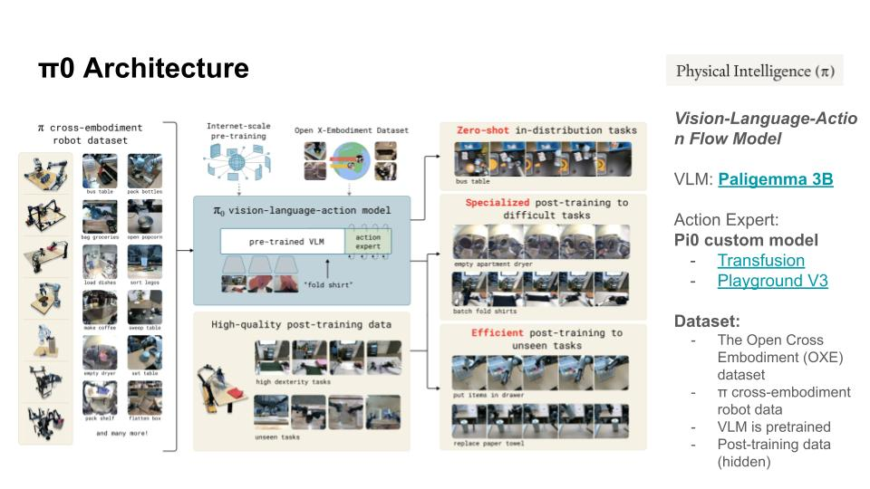

Pi0 is a state-of-the-art vision-language-action (VLA) model designed for general-purpose robotic manipulation.
Built on internet-scale pre-training and the Open X-Embodiment dataset, Pi0 promises versatility across tasks
like pick-and-place, articulation, dexterity and human robot interaction. But how well does it actually perform in the wild?
We are from GRASP Lab at the University of Pennsylvania. As contributors to the
Distributed RObot Interaction Dataset (DROID) dataset, we are fortunate to have early access to the PI0 model.
Our robot setup can be found here. With no training,
no finetuning, we just deploy the PI0-FAST-DROID and use it zero-shot. In order to build upon this powerful model,
we largely test its performance on a variety of complex tasks, through pi0 into difficult scenes in the wild.
Similar to Vibe Coding, the philosophy of our evaluation is: more in-the-wild, less controlled / lab setup. We observe pi0 like biologists observing a new animal - conducting interesting tests, looking for broad, qualitative properties. The aim is to encourage others to try out pi0, such an open-source, amazing foundation model for manipulation.
In this blog, we share results from 300+ trials testing Pi0 on a Franka Research 3 robot.
We explore its strengths, unexpected quirks, and limitations—and what this means for the future of imitation learning.
For detailed metrics and analysis, see our Results & Insights section.
Overall Success: 42.3% average task completion across 300+ trials
Key Finding: Pi0 demonstrates impressive vision-language understanding but struggles with spatial reasoning and precise manipulation
Bottom Line: Pi0 works impressively in the wild without fine-tuning, but success depends heavily on instruction phrasing and object familiarity
Our evaluation setup at GRASP Lab, showing the robot workspace, test objects, and typical manipulation scenes.
Key Findings
Through experiments across diverse manipulation tasks in the Levine Hall at Penn Engineering School, we observed a wide range of behaviors—remarkable performances, confusing failures, and many quirks. By testing Pi0 in varied environments (e.g., cluttered tables, articulated cabinets, human-involved settings), we concludes three critical insights:
Pi0 Works (Mostly): It achieves 42.3% average progress across diverse, hard tasks, even in unseen environments and objects. However, it also fails in some seemingly simple tasks.
Prompt Engineering Matters: While Pi0 is good at vision-action grounding, its performance drops 20~100% based on instruction phrasing. You need to carefully prompt it to make it work in some condition.
Unexpected Quirks: Pi0 can recover from failures, handle moving humans in the scene, but struggles with mid-task freezing, collision avoidance, and fine-grained manipulation.
Below, we unpack each finding with video examples and analysis. For detailed metrics, see Section 4: Results.

Performance across 300+ trials (42.3% average progress)
Word cloud of task instructions
Success Cases
Pick and Place
"Place the yellow fish into the purple box"
Precise placement of camouflage fish into the box
Articulation
"Open the drawer"
Opening drawer with multiple pull to make sure fully opened
Human Robot Interaction
"Hand the pineapple to the programmer"
Safe object handover to programmer, even there is wire occlusion from side view
Dexterity
"Pour water from the silver cup to the pink bowl"
Pour real water from Latte art vat into the target bowl
Multi-step Task
"Pick up all the objects into the basket"
Sequential bagging all the toys into basket
Novel Objects
"Close the capsule lid of the coffee machine"
Handling previously unseen device
2.1 Remarkable Performance of PI0
2.1.1 Robust Vision-Language Understanding in Complex Scenes
Powered by PaliGemma (Google DeepMind's 3B VLM) as its vision encoder (Beyer etc, 2024), Pi0 demonstrates robust scene comprehension and adaptability. Despite relying solely on uncalibrated monocular RGB inputs (224×224 pixels after compression), it can handle very challenging objects and environments like transparent, camouflaged and novel items. Showing the potential of End2End VLA in precision, closed loop control.
1. It can grasp transparent object
PI0 is capable of identifying and manipulating transparent objects, as shown below. It picks up the bottle with a stable grasp, aligns it to the small cup, and precisely drops it in. Many traditional grasp detection techniques require an accurate 2D or 3D reconstruction of the scene, and transparent objects can cause issues in reconstruction accuracy. This makes it all the more impressive that the model can detect transparent objects solely from uncalibrated, mono-RGB views from the wrist camera and one side view camera.
"Place the plastic bottle into the white cup."
"Place the plastic bottle into the white cup."
2. It can grasp an object even when it is camouflaged into a colorful background
PI0 can identify the 'yellow fish' here even when it is placed on top of a colorful board game. This object has an unusual and difficult shape, and it blends in well with the background, but pi0 detects well with its position, and its shape, well enough to grasp it up.
"Place the fish into the red box"
"Place the fish into the purple box"
3. It is robust to human activity in the input
During experiments, there were many scenarios where the side-view camera captured humans moving around in the background. However, pi0 was still focused on the task, keeping the robotic arm's movements focused on object manipulation.
We believe there are two reasons for pi0's robustness to human movement. First, the pre-trained VLM backbone of Pi0 is trained on human-involved images (Sharma et al., 2018, Changpinyo et al., 2022a, Kuznetsova et al. 2020), so humans are in-distribution. Next, from our occlusion experiments in Section 2.3.1, the policy seems to prioritize the wrist camera's images during pick-and-place tasks, so distractors in the side-view camera seem to minimally affect the policy.
Here are two side-view videos involving humans in the scene. Please refer to Section 4.6 for more results on human-robot interaction.
(All videos featuring humans were uploaded with permission from the individuals involved.)
"Pick the pineapple and place it into the basket"
"Hand the pineapple to the outstretched hand"
There's plenty of work in the past in CV, Robotics that does transparent object detection and manipulation. But the nice part here is that we have a data-driven system that does it, without any special logic or care for transparent objects.
"Pi0's ability to handle transparency, clutter and distractors hints at a future where robots see the world as humans do—through semantics, not just pixels."
2.1.2 High frequency dexterity of robot policy
Even though pretrained on massive datasets, Pi0 can perform high-frequency, closed-loop control up to 50Hz. Despite a 90ms-300ms delay introduced by HTTP connections between robot and the GPU server (Sergey, 2025), Pi0 achieves real-time responsiveness. It can do precise manipulation of complex objects like newspapers, T-shirts, and milk frothing pitcher.
Here are some impressive cases demonstrating the dexterity and precision of pi0. Notice all videos in this blog are uncut and unedited from the ZED 2 camera at 1x speed.
"Remove the pink bowl from the tray"
"Stack the wooden blocks"
"Fold the cloth from left to right"
According to the PI0 paper and pi0-FAST (Kevin etc, 2024, Karl etc, 2025), we think the dexterity stems from its flow matching architecture. Recently there are some efforts to run VLA with 7B VLM encoder at 50Hz (Kim etc, 2025), which is very impressive. We look forward to more large models running at a higher frequency!
2.1.3 Failure recovery and generalization
One key difference between the pi0 and other models is: it can work in the wild, without online data collection, without calibration, without much position tuning on the policy, we can let it run on our franka robot directly.
More interestingly, the policy behaves similar to diffusion policy, as shown below, it could recover from failures and retry tasks that initially failed.
"Pick up the banana"
Failture Case
Pi0 demonstrates very impressive robustness across different lights, locations and tasks. However, it do exist some weakness, here is some examples on its cons:
OOD Objects
"Place the beaker into the pink bowl"
Cannot find the transparent glass beaker
OOD Background
"Pick the black box on the white box"
Can not handle well with unseen background
Task Misunderstanding
"place the yellow fish into the basket"
Pick up the wrong object in cluttered scene (25% progress)
Spatial Reasoning
"Place the can into the tray"
Misjudges object position relative to container (19% error)
General Articulation
"Close the right cabinet door"
Fails to open toy kitchen cabinet on the table (0% progress)
Coffee Making
"Pour coffee bean into the grinder"
Cannot work with espresso machine (10% progress)
2.2 Problem with PI0
2.2.1 Early stopping
One common failure case is that policy may freeze unexpectedly during execution, leaving tasks incomplete until human intervention.
This behavior comes from two interrelated factors: semantic ambiguity and autoregressive action decoding limitations.
Root Causes
1. Semantic Misalignment
Pi0 lacks LLM-like commonsense reasoning to infer unfamiliar object categories. When it does not understand a command, it gets stuck.
In some experiments, we found that some objects were out of distribution(OOD), causing early stopping.
"Place the gun into the blue box" - Pi0 stops because it can't recognize which object is 'gun'
2. Autoregressive Local Optima
Case: "Open the drawer" → stops after grasping the handle.
Behavior: Pi0 assumes the task is complete once the handle is gripped, failing to infer multi-step articulation.
Why: The model predicts actions frame-by-frame without memory of prior steps.
3. Token Decoding Edge Cases
During inference, pi0 will throw out this error: Error decoding tokens: cannot reshape array of size 79 into shape (8)
According to our discussion on Github Issue#373, sometimes the policy decoded mis-shaped actions occasionally during inference.
In official implementation, pi0-fast-droid defaults to "no-motion" in these cases. Since as the robot continues querying the policy,
the error gets skipped on subsequent queries, allowing the robot to quickly recover and continue decoding correctly-shaped outputs.
2.2.2 Imprecise spatial reasoning
Pi0 often struggles with spatial reasoning over height. For example, when asked to pick up an object and place it into a container,
the policy cannot lift the object high enough to clear the height of the container. This suggests the drawback of vision-based
autoregressive VLA: it does not have a metrically accurate method to estimate the distance between gripper and surrounding environment.
"Place the plastic bottle into the pink bowl" - Pi0 fails to lift high enough
We also tried to prompt pi0 to raise the gripper higher, but it didn't learn on this, making it easy to collide with containers.
When pi0 is asked to operate with articulated objects, it becomes even harder for it to estimate the distance from the side view camera,
causing frequent collisions. This is particularly concerning when the robot is interacting with humans, as it doesn't have an explicit
constraint map and may hit/grasp the user's hand, which is unsafe.
What's more, when Pi0 is required to manipulate household appliances, it tends to collide with the device or stop during inference trials.
As shown below with our coffee machine examples:
"Take out the cup under the coffee machine" → collides with top of machine
"Take out the silver cup from the coffee machine" → succeeds by grasping handle
One possible solution is to involve concepts like Vox map and planning constraints. Depth cameras would also be very helpful to implement collision avoidance.
2.3 Quirk: Some interesting behavior of pi0
Quirk 1: Active Perception & Viewpoint Robustness
One of the most frequently asked questions on Pi0 is, how robust it is when the sensory inputs are disrupted? We did several tests about blocking the camera, the object and moving the side view camera. Here's what we learned.
Camera Blocking Experiments
Setup:
Task: "Pick up the pink object and place it into the bowl."
Behavior Metrics: Success rate, recovery attempts, and failure modes.
We sought to determine how the robot would respond when the target of its task was occluded. In order to do this, we asked it to grasp a box, varying the occlusion level from fully visible, to 50%, to 100% occluded. When the box was fully visible, the robot would succeed. When it was 50% occluded, the robot would generally succeed, sometimes moving the occluding object in order to get a better view or grasp of the target. When it was fully occluded, though, the robot would become confused and stop. During one fully occluded trial, the robot knocked over the occluder and the red box, revealing more information about the location of the target but making it impossible for the robot to proceed with a good grasp.
Why This Matters
Pi0's ability to improvise with partial observations hints at emergent active perception—a critical feature for real-world deployment where lighting, occlusions, or camera failures are inevitable.
Left: Blocking the side camera forces Pi0 to rely on wrist-view. Right: Success rates across blocking scenarios.
This quirk underscores Pi0's potential as a resilient generalist—though it's no substitute for dedicated SLAM or depth sensing... yet.
Camera blocking experiment
Quirk 2: Opening > Closing
Pi0 exhibits unexpected behaviors when interacting with articulated objects (e.g., drawers, cabinets), Pi0 achieves higher success rates when opening articulated objects (e.g., drawers) compared to closing them.
Examples:
Task: "Close the drawer."
Behavior: Pi0 grasps the handle, attempts complex maneuvers (e.g., twisting), and often fails to align with the articulation axis.
Result: 60% success rate for opening vs. 35% for closing (see video).
Toy Cabinet or Real Drawer on table Challenge:
Task: "Close the toy kitchen cabinet."
Behavior: Pi0 freezes or pushes randomly when it is required to manipulate with articulated objects on table.
Result: 0% success rate (see video).
Possible Cause:
Pi0's training data prioritizes opening actions (common in datasets like DROID).
Closing requires precise backward articulation, which the model struggles to infer from RGB-only inputs.
In general, closing things is much easier than opening. While pi0 tends to execute some more fancy actions to "close one thing". Like the robot will firstly grasp the drawer handle, then try to close it. While the closing task could be generally easy to move along the articulation axis.
"Close the drawer"
"Close the right cabinet door"
For unfamiliar, toy-like cabinet doors, the closing becomes even harder. As pi0 is never trained on this articulation object, and it may tend to stop as it never learns how to close this type of object.
Quirk 3: Language Specificity Matters
Pi0's performance can be improved after tuning its instruction. Like this examples:
Instruction
Success Rate
Behavior
"Close the toilet"
0%
Wanders aimlessly, unable to localize the target.
"Close the white lid of the toilet"
100%
Precise alignment and execution.
Why This Happens:
Vague instructions (e.g., "toilet") force Pi0 to guess the target sub-component.
Specificity (e.g., "white lid") aligns with PaliGemma's object-part grounding capability.
Video Examples:
Close the white lid for the toilet (Success)
Close the toilet (Failure)
On the contrary, Pi0 freezes or fails when instructions contain typos, grammatical errors, or ambiguous phrasing.
Example:
Instruction: "Close the tiolet" (misspelled).
Behavior: Robot hesitates, then picks up the nearest familiar object (e.g., a marker pen).
Implication: Pi0 lacks the linguistic robustness of LLMs like GPT-4, failing to infer intent from context.
The Power of Prompts
Pi0's 3B language model is very sensitive to phrasing:
Good: "Put A into B" → Clear spatial logic → 80% success
Bad: "Fill B with A" → Ambiguous → 20% lower success
Example:
"Close the toilet" → 0% success
"Close the white lid of the toilet" → 100% success
Quirk 4: What will pi0 do if there is no specific language goal?
With no language goal, the robot will try to pick up the most familiar object within dataset based on RGB image.
Examples:
Pick up the mark pen and move back and forth
Reach the block back and forth
Here, mark pen takes 16.67% of the DROID dataset. Fine tuning on DROID may increase the probability of associating image with action to pick-and-place it.
Why This Matters
These quirks highlight critical limitations in Pi0's spatial reasoning and language grounding, emphasizing the need for:
Expanded Articulation Datasets: Covering closing actions and OOD objects.
Language Model Upgrades: Integrating LLMs for better instruction parsing.
Force Feedback Integration: Enabling tactile-based correction during manipulation.
3. Robot & Model Setup
The following are details of our experiment set up.
3.1 Hardware:
Franka Research 3 Arm: 7-DOF force-sensitive robot with a 3 kg payload.
Robotiq 2F-85 gripper: two-finger gripper with 5mm stroke and adjustable force control.
Cameras:
Side-view: ZED 2 stereo camera for global scene understanding
Wrist-mounted: ZED Mini for close-range object manipulation
Perception Mode:Pure RGB (no depth calibration)

3.2 Computing
GPU Server:
GPUs: 1× NVIDIA RTX A6000 (48GB VRAM)
CUDA Version: 12.3
Usage: VLA model inference.
Workstation
GPU: NVIDIA GeForce RTX 3080 (16GB VRAM)
CUDA Version: 12.6
Usage: DROID low level control.
3.3 Pi0-FAST-DROID:
Vision-Language Model: Paligemma 3B for spatial and semantic understanding.
Action Expert: Build upon Transfusion + Playground V3 for high-frequency control.
Training Data: Pretrained on π cross-embodiment robot dataset & Open X-Embodiment, fine tuned on DROID dataset.

Dataset used for pretraining pi0
Results & Insights
Overall Performance
Performance across 240+ trials (52% average progress)
Across our 240+ test trials, Pi0 achieved varying degrees of success:
Complete Success: 38%
Partial Success: 28%
Complete Failure: 34%
We observed that performance varied significantly based on task type, environmental conditions, and most importantly, the phrasing of instructions.
Close the capsule lid of coffee machine - 50% success
Pick up the capsule from the coffee machine - 0% success
Place the capsule into the coffee machine - 0% success
Espresso Coffee Machine:
Pick up the coffee portafilter - 0% success
Pour the coffee into the cup - 0% success
Pick up the silver milk frothing pitcher- 33% success
"Place the capsule into the coffee machine"
"Close the capsule lid of the coffee machine"
Instruction word cloud used in our evaluations
The Bigger Picture
Why Pi0 Matters
Generalization
Pi0 shows decent zero-shot performance across a wide range of tasks. For centuries, humans have had a strong desire to build a generalist agent system that could work in the wild, going out of the robotics lab and assisting our daily life. With the rapid development of VLAs model, the existence of Pi0 marks a milestone for robotics research.
Scalability
FAST tokenizer enables 5x faster training, which is an impressive milestone and turning point for VLA research. The effective utilization of data implies that what matters to robots is not only the scaling size of dataset, but also the representation's expressiveness.
Open Source Impact
The open-sourcing of Pi0 is very intuitive and warm-hearted for the whole robotics industry. The impact not only lies in that every lab gets a very powerful manipulation baseline, but it will also push and extend the horizon of research in manipulation problems.
Future Directions
Better Language Grounding
As discussed in their new work "Hi Robot", VLA's language understanding ability could be enhanced via a two-tiered inference framework. However, as we saw in our examples, the 3B VLM backbone may still suffer from instruction following & generalization across language axes.
Force Feedback Integration
Current models rely primarily on visual input. Incorporating force feedback could help with tasks requiring delicate pressure control and improve interaction with varied surfaces.
Memory Modules
Currently, Pi0's autoregressive paradigm has achieved great success, but lacking history/memory capabilities is a significant limitation. Future models will likely incorporate explicit memory mechanisms to maintain task state across interruptions.
Conclusion
Pi0 represents a promising step toward generalist robots, but significant challenges remain. Instruction following and fine-grained tasks still pose considerable difficulties. As foundation models evolve and incorporate more modalities and memory capabilities, we're optimistic about the future—soon, every robotics lab might have a Pi0-like baseline!
If you find this evaluation useful for your research, please consider citing our repository:
@misc{pi0-experiment-wild,
author = {PAL Research Group},
title = {Pi0 Experiment in the Wild},
year = {2024},
publisher = {GitHub},
url = {https://github.com/penn-pal-lab/Pi0-Experiment-in-the-Wild}
}
Our robot workspace setup used for evaluating Pi0.